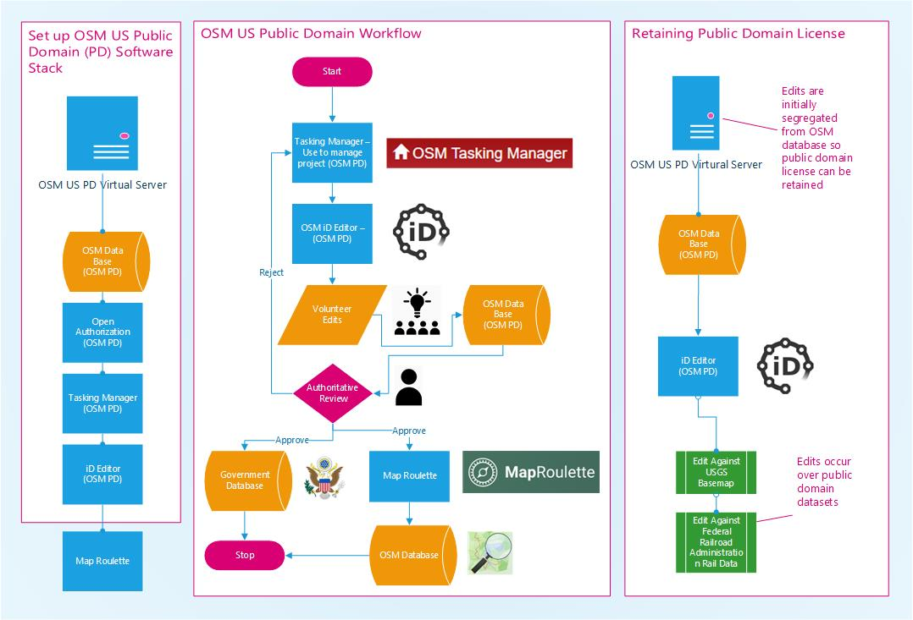

Public Domain Map
State of the Map 2022 - Friday, April 1, 2022

Jim McAndrew
Geospatial Web ServicesNational Park ServiceColorado State University

Derald Dudley
US Department of TransportationTransportation Theme Lead: National Spatial Data Infrastructure
Licensing


ODbL
Open Database License
 OpenStreetMap is ODbL
OpenStreetMap is ODbL- OSM used to be Creative Commons Share-Alike/Attribution 2.0
Change from ODbL
Open Database License
- There was a push to drop Share-Alike a few years ago.
Change from ODbL
Open Database License
- The OSM community did not support the change.
- It could lead to a situation where someone takes the whole of OSM and incorporates it into their private map database without giving data back.
- The last license change was difficult, and resulted in contributions being removed.
- Governments can't use contributions that aren't reviewed.
- It turns out that ODbL really doesn’t prevent most use cases, and it provides a lot of benefits.
Public Domain
(From Wikipedia)
A work of the United States government, as defined by the United States copyright law, is "a work prepared by an officer or employee" of the federal government "as part of that person's official duties." In general, under section 105 of the Copyright Act, such works are not entitled to domestic copyright protection under U.S. law and are therefore in the public domain.
- The US Federal Government is required to release its data as Public Domain.
- This means anyone can use it, free of charge, no attribution, no share alike, can be used for anything.
OSM and the Public Domain
- I wrote all about it once here
- Any PD data connecting with ODbL data in OSM, gains the ODbL license
- It gets tricky really fast, and you start asking Whose Node Is It?
- OpenStreetMap just isn't the best place to store Public Domain Data
Government Data
Authoritative Data- There is an expectation that the information provided by the government is correct and can be used as an Authoritative data source.
- This can also lead to errors of omission, where sometimes no data is better than bad data.
Government Data
Validation- The USGS National Map Corps has come up with a great way of incorporating volunteer contributions into their official datasets.
Government Data
Validation- I even talked about this once at a State of the Map US (2013)
Forks
Forks
- Forks can lead to fragmentation
- I wrote a whole paper on it once
Forks
- Creative Commons
- USGS National Map Corps
- NPS Places
- OpenHistoricalMap
- And more...
Public Domain Map

Public Domain Map
- Public Domain Data
- Uses OpenStreetMap tools
- iD
- Tasking Manager
- MapRoulette
- Has an authoritative review process
- Final Datasets can be used by Federal Government Agencies or imported into OpenStreetMap.
Public Domain Map
Pilot Project
- Tunnels!
- Using USGS Tunnel information and FRA/DOT Railroad data, we are using the HOTOSM team’s Tasking Manager to help map all the railroad tunnels in Colorado.
- Once the tunnels are submitted, then will go through an authoritative review process, and included in USGS and DOT map products.
Public Domain Map
Question / Learn More!
Jim McAndrew
Derald Dudley
- https://publicdomainmap.org/slides/sotmus2022/
OSM US:Slack: #publicdomainosm
Github: https://github.com/publicdomainmap
- Website: https://publicdomainmap.org